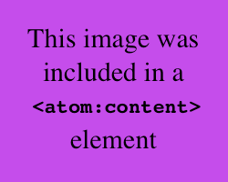
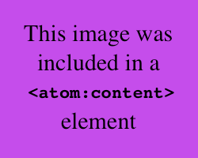
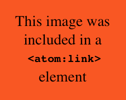
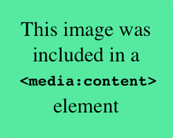
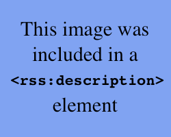
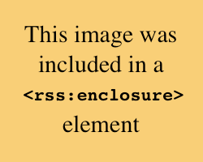

Image in atom:content
This post includes an image using an encoded img tag in the
atom:content element. If your reader supports this, you should see the following
image: 
This feed includes demonstrates three methods for including images in Atom.
URL: http://wiki.willnorris.com/media-feeds/image/feed.atom
This post includes an image using an encoded img tag in the
atom:content element. If your reader supports this, you should see the following
image: 
This post includes an image using a atom:link element with a
rel="enclosure" attribute. If your reader supports this, you should see the
following image: 
This post includes an image using a media:content element. If your reader supports this,
you should see the following image: 
This post includes images using all of the above techniques.
This feed includes demonstrates three methods for including images in RSS.
URL: http://wiki.willnorris.com/media-feeds/image/feed.rss
This post includes an image using an encoded img tag in the
rss:description element. If your reader supports this, you should see the following
image: 
This post includes an image using a rss:enclosure element.
If your reader supports this, you should see the following image: 
This post includes an image using a media:content element. If your reader supports this,
you should see the following image:
This post includes images using all of the above techniques.